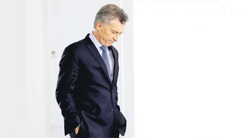

Real Chubut - Agencia de Noticias


Como te ven te tratan

Macri se presenta en las Naciones Unidas en medio del derrumbe de su imagen en la prensa mundial. Los medios extranjeros relatan la crisis argentina con textos críticos a la figura presidencial, destacan su desgaste político y dan por concluidas las expectativas sobre su Gobierno. Las notas y la opinión de los corresponsales
“Cómo los Macri cayeron en desgracia”, tituló la revista Vanity Fair hace apenas diez días. “Su estrella se ha apagado. La economía está en crisis y Macri ha dilapidado las expectativas”, publicó El País al analizar los mil días de Gobierno. “Puede ser que el daño ya esté hecho: por mucho que la devaluación del peso argentino logre ser controlada, sus consecuencias en el corto plazo serán más inflación, pobreza y desempleo”, dijo la BBC. La imagen del presidente Mauricio Macri en los medios internacionales se desplomó a un ritmo mucho más rápido que el del ascenso del dólar. La promesa de un nuevo liderazgo regional se esfumó junto con la confianza de los mercados internacionales y la lluvia de inversiones, que fue reemplazada por las tormentas financieras. “Macri creía que su imagen en el exterior le daba un plus de legitimidad. Y fue ineficiente. Desnudó que las expectativas que había creado eran falsas, tanto de él como líder como sobre las potencialidades de su modelo”, señala el sociólogo especialista en comunicación política Luis Alberto Quevedo.
Esta semana, el Presidente retoma su agenda internacional: mañana hablará en la Asamblea General de Naciones Unidas y concurrirá a una recepción ofrecida por Donald Trump. Lo precede una serie de análisis críticos en distintos medios extranjeros.
El último perfil del matrimonio presidencial publicado por la edición española de la revista Vanity Fair es uno de los textos más lapidarios referidos al líder del PRO. No habla solamente del fracaso de la gestión económica sino que hasta menciona acusaciones por explotación infantil a la firma textil de la familia de Juliana Awada (de quien hace año y medio destacaba que “triunfó en su visita a España” y que su estilo era “versátil, natural y audaz”). También señala que los que no quieren al Presidente se refieren a él como “Macri gato” y que en distintos recitales o espectáculos deportivos lo saludan con un canto lleno de insultos. “Asuntos como la misteriosa muerte del fiscal Nisman, el atentado a la Amia que investigaba el finado, las relaciones entre Irán y los K, la alta inflación no reconocida por los informes oficiales y las continuas acusaciones de corrupción que salpicaron a importantes miembros del gobierno Kirchner o sus amigos, como el vicepresidente Amado Boudou y el empresario Lázaro Báez, han sido utilizados de manera recurrente como cortina de humo para tapar la insatisfactoria gestión macrista”, dice la revista, que no se olvida de mencionar los Panamá Papers.
Centrado en las consecuencias políticas de los malos resultados económicos de la gestión, un reciente artículo de BBC Mundo analiza que el mayor reto de Macri será “gestionar la crisis sin sufrir más desgaste político” y afirma que “una de las ventajas más grandes del mandatario argentino -para muchos la única razón por la que todavía es presidenciable- es que la oposición está dividida”.
Daniel Pardo, corresponsal de BBC en Argentina señaló a PáginaI12 que las notas del medio buscan analizar lo que pasa: “Va más allá de la opinión. Hay un reflejo de la situación económica y Macri no pudo cumplir sus promesas. Hace un año los economistas ya advertían que la deuda y la bicicleta financiera eran problemas”. Pardo, que es colombiano y también fue enviado en Venezuela, cree que en la Argentina los medios internacionales tienen mayor independencia y distanciamiento del Gobierno que muchos de los locales. “Hay medios que tienen vínculos que van más allá de la fuente, no solo es una cuestión política sino también cultural, son parte del mismo grupo social”.
Los corresponsales consultados por PáginaI12 coincidieron en que en el exterior hubo una interesante expectativa con el gobierno de Cambiemos y ahora hay una decepción, pero difieren sobre el momento en que perciben el quiebre.
“La impresión generalizada en los medios internacionales de que el gobierno de Cambiemos iba a poder dar vuelta la economía con facilidad está desvanecida. El optimismo del principio está dando lugar a datos de la realidad que muestran una situación mucho más compleja y dinámica. El punto de inflexión claramente fue cuando Argentina acudió al FMI”, afirma Uki Goñi, colaborador de The Guardian.
Para la periodista mexicana Cecilia González, la imagen del Presidente “se modificó de manera negativa este año”. González, que entrevistó a Macri en julio de 2016, asegura que “desde el principio del gobierno fue evidente que la posición editorial de muchos medios internacionales que apoyaban a Macri contrastaba con los reportajes y coberturas que hacían (hacemos) los corresponsales extranjeros, que en general tenemos una visión crítica. La desaparición y muerte de Santiago Maldonado es un ejemplo de la importancia de la cobertura internacional para visibilizar problemas de derechos humanos que ha habido durante este gobierno”. Como especial “desacierto” en el manejo de la imagen de Macri, la corresponsal de Notimex destaca el anuncio en menos de dos minutos de una renegociación con el FMI que no era cierta y que de inmediato devaluó de manera drástica al peso. “El problema de fondo es que para tener una buena imagen hay que contar con resultados positivos de gestión y Macri no los tiene, el país tiene peores indicadores económicos y sociales que cuando comenzó a gobernar”, concluye.
Remi Lehmann es corresponsal de la Radio Pública Holandesa. Cuenta que en su país Macri era percibido como un emprendedor, un político de centro, moderno, desideologizado pero con promesas de eficiencia. Y que hubo un quiebre cuando el Gobierno no vio venir la crisis de los mercados emergentes. “Hubo mucha sorpresa. Estaba anunciado que la Fed (la Reserva Federal de Estados Unidos) iba a subir la tasa y eso iba a traer consecuencias. ¿Cómo no se tomaron medidas preventivas? En Holanda se entiende que hubo una situación mundial, pero también que acá no se supo manejar algo que se podía prever. Y es más difícil de digerir cuando hay una actitud soberbia como ‘somos el mejor equipo de los últimos 50 años’”.
El análisis de los corresponsales extranjeros es lo que se ve reflejado en recientes publicaciones internacionales. El diario El País, afirmó que “Argentina enfrenta un problema de falta de confianza, más que de solidez económica”, destacó que “ajuste y déficit cero son dos conceptos que generan escalofríos a los argentinos” porque “remiten a grandes crisis económicas, como la que en 2001 hizo saltar por los aires a todo el sistema” y que “en este escenario, los peronistas parecen tener, una vez más, la llave de la gobernabilidad”.
¿Por qué es importante lo que reflejan los medios extranjeros o cuán importante es para el capital simbólico macrista las criticas que provienen desde allí? ¿Hay algo aspiracional en ese estar pendiente de cómo nos ven afuera (porque cuando decimos afuera decimos Estados Unidos y Europa)?
Pardo dice que según su experiencia los argentinos no se informan sobre la actualidad política o económica local por medios internacionales pero le sorprende que en cada evento de trascendencia no falte la nota sobre cómo lo reflejaron en el exterior, textos que en general tienen altos índices de lectura en las webs locales.
“En 2016 y 2017 Macri tuvo una serie de viajes sin importancia geopolítica o económica pero vinculados a la construcción y proyección de su imagen internacional. Fotos con los reyes de España, con los reyes de Holanda. Era un líder que visitaba a los líderes del mundo. Era el que llevaba la nueva imagen de la Argentina”, destaca Quevedo. “Fue una creación de marketing, pura estrategia publicitaria que se desmonta fácilmente. Y se desarmó rápidamente: primero por el fracaso del modelo económico. Pero además, él mismo desarmó los lugares donde se construyen los liderazgos regionales en América Latina, como Mercosur, Unasur. Y su discurso como líder de un proceso es débil. (El ex presidente colombiano Alvaro) Uribe, por ejemplo, lograba ser un referente regional del modelo neoliberal, atar el destino de Colombia a Estados Unidos. Macri no tiene esa cabeza geopolítica y la Argentina se desvalorizó mucho, no tiene liderazgo ni siquiera en los países vecinos y el que era su principal aliado (Michel Temer) atraviesa una profunda crisis de legitimidad”, agregó.
También es cierto que más allá de la cuestión simbólica, “afuera” son los mercados, los inversores que pueden hacer llover y, por lo tanto, el gobierno necesita proyectar una imagen que ayude a la recuperación de la economía. En ese plan es que el Presidente viajó el fin de semana a Estados Unidos para hablar mañana en la ONU, evento que el año pasado delegó en la vicepresidenta Gabriela Michetti. En esta ocasión servirá para mostrarse con Trump (al menos en una recepción que el presidente norteamericano hará a los jefes de Estado que participarán de la Asamblea General de Naciones Unidas) y tratar de tentar a posibles inversores. Otra de sus tareas se concentrará, justamente, en buscar revertir la mala imagen que están reflejando los medios internacionales, por eso hoy se reunirá con periodistas del Financial Times y el grupo Bloomberg.
Hay que decir también que el triunfo de Trump en Estados Unidos dejó pedaleando en el aire la estrategia de relaciones internacionales del macrismo. De acuerdo con Quevedo, “Trump desmontó las alternativas a Unasur y Mercosur, que eran la Alianza del Pacífico y los tratados de libre comercio. Macri sale con un discurso aperturista cuando Estados Unidos lo cambia y no pudo concretar hasta ahora la alianza económica con Europa. El último intento que hace es decir que el FMI, pero también Estados Unidos lo apoya. Dice, ‘no soy ningún líder pero Estados Unidos confía en mí. Estoy del lado correcto’. Pero eso también está en crisis. A Trump lo que le importa es que no vivan de él”.
Fuente: Pagina12